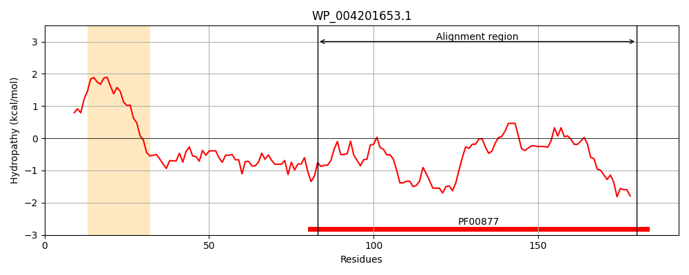
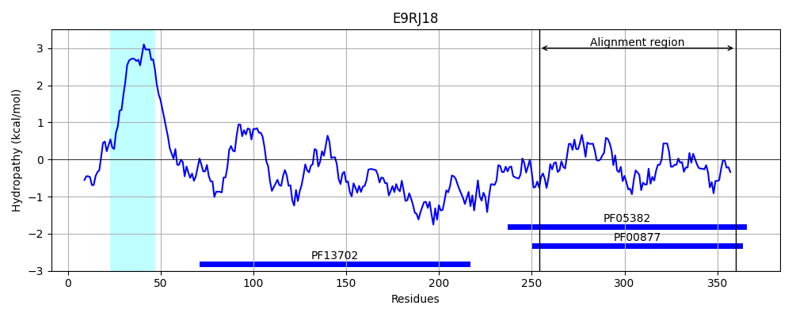
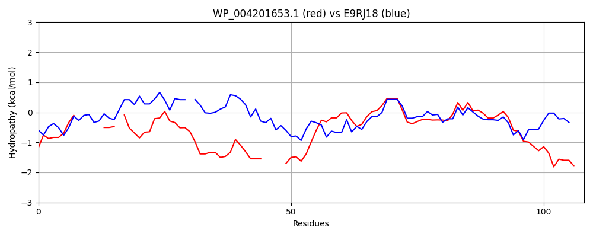

Hit Accession: E9RJ18
Hit TCID: 3.A.7.13.2
Hit Description: gnl|BL_ORD_ID|3956 gnl|TC-DB|E9RJ18|3.A.7.13.2 Putative lipoprotein OS=Bacillus subtilis subsp. natto PE=4 SV=1
Mach Len: 108
e:0.000000
Query TMS Count : 1
Hit TMS Count: 1
TMS-Overlap Score: 0.000000
Predicted Substrates:CHEBI:8526;protein polypeptide chain
BLAST Alignment:
| Protein Hydropathy Plots: | |
|---|---|
|  |  |
Pairwise Alignment-Hydropathy Plot: | |
|  | |